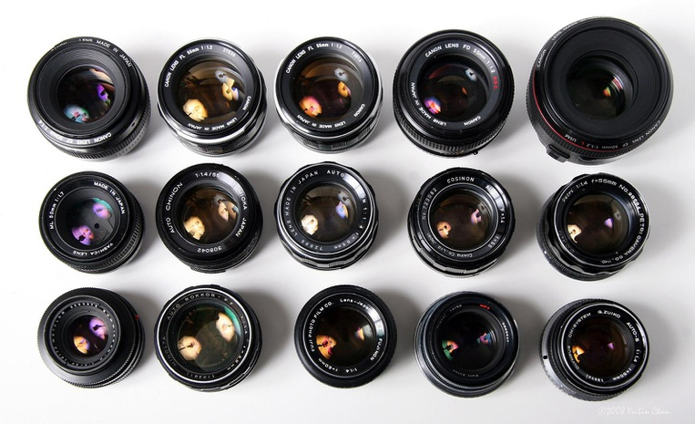
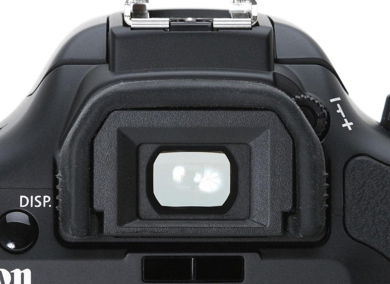
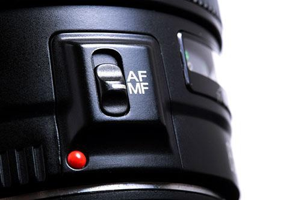
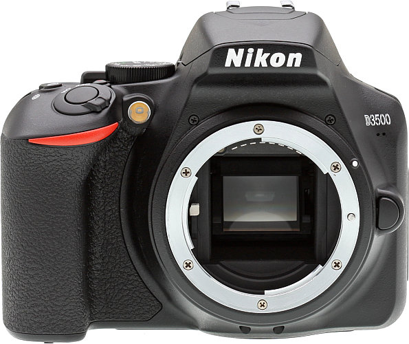
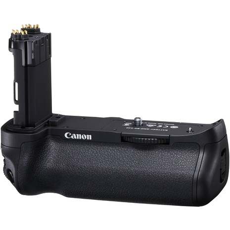

Like DSLR cameras (SLR), mirrorless cameras (or CSCs) allow lenses, but don't include the same mirror system found on DSLRs. Simply put, this means they can be smaller, lighter in weight, and mechanically simpler. In terms of control, they do not differ much from compact cameras. Both amateurs and professionals in the field of photography, however, did not immediately adopt the new type of camera. Without a mirror, there is no optical viewfinder either, that is, it completely relies on the display or an electronic viewfinder in this regard. Therefore, doubts arose immediately about the quality, functions and other things. What is of particular concern to professionals is that the number of lenses available for mirrorless cameras is significantly less than that of DSLRs. So is there a chance for mirrorless cameras to gain more popularity than their competitors? Here are ten key differences that help us figure it out.
1. Size and weight
DSLR cameras can be quite large, which can be equally more or less convenient. For example, in the case of large lenses, it is better if the camera is larger. Mirrorless cameras are undoubtedly smaller and this is one of the advantages around which these cameras are growing in popularity. However, again, the camera / lens balance must always be considered. Many mirrorless cameras are sold with zoom lenses and this is fine for standard conditions, but one of the favorite hobbies of photographers is experimenting with lenses. When it comes to APS-C mirrorless cameras, this can be problematic when used with a heavy lens. Panasonic and Olympus are developing micro 4/3 mirrorless cameras. They are smaller, but the lenses for them are also smaller, so the whole set, the whole camera, turns out to be harmoniously compact. However, many mirrorless cameras are getting bigger as manufacturers are willing to expand the number of features to meet the needs of users. And DSLRs, especially for beginners, on the contrary, tend to get smaller.
2. Lenses
Legendary manufacturers like Canon and Nikon have a huge list of DSLR lenses for all occasions, while Sony and Pentax are trying to keep up. In this regard, mirrorless cameras cannot boast of a similar choice. For those who value lens choices and pay attention to every detail, Canon or Nikon DSLRs are probably best suited - at different price points, you can choose almost any option for any purpose. Plus, third-party manufacturers such as Sigma and Tamron regularly produce high quality lenses for various types of photography. With mirrorless cameras, the problem is solved differently - Olympus and Panasonic use the same mount, so there is no shortage of lenses, especially since they cope very well. Both Fuji and Sony are trying to expand the range, but so far they have room to strive. But do not forget that there are adapters so that you can use lenses from SLR cameras on mirrorless cameras.
3. Viewfinder
Natural, without unnecessary bugs - this is all suitable for describing optical viewfinders and there are those who prefer "old school". Others prefer digital and the ability to always see what they are filming on the screen. All DSLR cameras, from the cheapest to the most expensive, are equipped with an optical viewfinder. This is not surprising, since the viewfinder is one of the main elements of the mirror mechanism. But some mirrorless cameras exclusively use the LCD display to build the composition of the frame, and this is not always convenient. A number of mirrorless cameras, of those that are more expensive, have viewfinders and those electronic. They display the image directly from the matrix, and not through a mirror system. Electronic viewfinders, of course, are evolving rapidly, and the latest ones boast incredible quality. But so far, they are not perfect, and with fast movement, there will still be a noticeable lag. However, such viewfinders also have advantages over optical ones - they can display more information. For example, histograms. They can simulate the image, so there will be fewer unpleasant surprises and imperfect photos. And yet, professionals will always choose the classics and trust their own eyes. Ultimately, though, it all comes down to personal preference.
4. Autofocus
AF on SLR cameras still wins out when it comes to fast-moving subjects. But in live view mode, it is inferior to mirrorless cameras. DSLR cameras use fast and reliable phase detection autofocus, the modules of which are located under the mirror. The focusing itself occurs while the mirror is down, but in the viewfinder, it is only noted when the mirror is raised and the shutter is triggered. When using autofocus in live view, the mirror should be raised and the camera switches to less rapid contrast AF and uses the image captured by the sensor. A number of cameras (Canon EOS80D, Canon EOS 7D Mark II, etc.) use a hybrid autofocus system in which phase detection autofocus elements are built directly into the matrix. This makes autofocus much faster in live view. However, a limited number of cameras use this system and most still use phase detection. Among the advanced mirrorless cameras, there are also those that combine contrast autofocus with phase elements on the matrix, which gives them both focusing accuracy and speed. Therefore, these cameras do an excellent job of tracking the subject.
5. Continuous shooting
Even the best of the best DSLR cameras can no longer compete with mirrorless cameras. Therefore, when you need to shoot action photos, you will have to give preference to them. This is partly due to the lack of a mirror - there are fewer moving elements in the camera and everything happens much faster. In addition, many cameras also focus on the ability to shoot 4K video, which requires serious performance from the device and this also plays into our hands when we need to shoot a large number of frames. In terms of numbers, Canon's top-end professional SLR camera, the EOS-1D Mark II, is currently capable of shooting 14 frames per second. And the frame rate of the Olympus OM-D E-M1 Mark II mirrorless camera is 60fps. The difference is just obvious. However, that's not all, Canon will continue to focus at this speed during shooting. Olympus, since it will use an electronic shutter, and will shoot with a fixed focus. So the maximum speed, with the mechanical shutter activated on Olympus, at which the camera can focus on a moving subject is 10fps. Panasonic is developing using 4K video to create 8-megapixel stills at 30fps.
6. Video
DSLRs are still incredibly popular for video shooting, but it's not safe to say that it will last long. DSLRs, of course, were the first to provide the ability to shoot HD and Full HD and the number of options with different lenses and functions only added to their popularity. So many professionals and youtube bloggers choose DSLRs. Mirrorless cameras are desperately stepping on the heels of DSLR cameras, developing the capabilities of 4K, which is fundamentally important for many and not all DSLRs can boast of this function. In addition, mirrorless cameras offer a wider range of options for live view, focusing and processing. For video, they are still much more convenient. Panasonic and Sony have offered users the GH4 and Alpha A7S II respectively, cameras that offer hybrid photo and video capabilities. These cameras are appreciated by amateurs and professionals alike.
7. Functionality
Even DSLR cameras designed for beginners have serious manual settings and can do a lot in the right hands. Mirrorless cameras try to keep up and sometimes even overtake. It's hard to say that there is a big difference between the functionality of both types of cameras. Both offer a completely manual shooting mode. They both shoot both RAW and JPEG. Both are capable of producing the highest quality photographs. In every sector - beginner, amateur or professional, the settings will be approximately equal. But in DSLRs for beginners, manual settings are hidden behind a lot of automatic ones.
8. Photo quality
DSLRs use the latest inventions, APS-C or full-frame sensors. Mirrorless cameras do the same, but in smaller formats. Here, in principle, there is also no fundamental difference. The highest resolution in a DSLR camera now is 50 megapixels (Canon EOS 5D) in a mirrorless camera - 42.5 megapixels (Sony Alpha A7R II). True, not everything is limited by the number of megapixels, since the size of the matrix remains the most important factor in this regard. Full-frame sensors are larger and tend to offer better quality. APS-C will cost less, although it cannot be said that they are worse. Both types of sensor can be found on both types of cameras. Micro 4/3, which is used on Panasonic and Olympus cameras, is smaller than APS-C, and the cameras and lenses for them are smaller in size. Therefore, the question here is what is more important - size or chic quality.
9. Battery
Most DSLR cameras are capable of taking an average of 600-800 shots on a single charge. Top-of-the-line cameras can take over 1000 shots (it's understandable that they will be more expensive). Mirrorless cameras are weaker in this regard and are capable of shooting 300-400 frames per charge. If more shots are required from the camera, you will have to stock up on extra batteries. With such a large gap between the capabilities of DSLRs and mirrorless cameras, you need to clearly understand what is more important for the user. Nikon D7200 SLR and Fuji X-T2 mirrorless camera are about the same in terms of parameters. But the first is capable of taking 1100 frames, and the second - 340 for one charge. The performance among the rest of the "parallel" cameras will be very similar. Why exactly this happens is difficult to say, perhaps it is a matter of mechanics, battery size and display operation.
10. Price
If we take the cheap segment, then a budget DSLR will provide more options than a similar mirrorless camera. So for those who want more and cheaper, a DSLR is still the best solution.An example is the Nikon D3300 SLR camera from the budget segment, equipped with an APS-C sensor, optical viewfinder, manual settings, a battery that can withstand 700 frames and a bayonet mount that allows access to all Nikon lenses. A similarly priced mirrorless Sony Alpha A6000 is equipped with almost the same 24MP APS-C matrix, it has an electronic viewfinder. But the battery will need a spare. At the amateur and professional level, the differences are less noticeable. Smaller and lighter will not always equal the cheaper, but remember that the viewfinder will only be on more expensive mirrorless cameras. The final choice in favor of any type of camera is impossible. Everything here depends entirely on personal preferences and goals. If this is photography in the most serious sense, as a profession, it is best not to deviate from the classics yet and trust the choice of professionals - an SLR camera. Likewise, for a newbie in photography, a DSLR will offer more benefits. But when it comes to amateur shooting or video shooting, it's better to give mirrorless cameras a chance. At the very least, they are much easier to transport.